Как cделать красивую визуализацию в Google Data Studio

Мы уже писали, как собирать и визуализировать данные с помощью Power BI, а теперь появилась возможность сравнить его с Google Data Studio, который стал доступен практически во всех странах мира.

Что требуется для начала работы в Google Data Studio
- Войти в свою учётную запись Google.
- Территориально находиться в стране, для которой открыт доступ в Google Data Studio. На данный момент этот сервис открыт практически всему миру, за исключением Польши, Китая, России, Судана, Ирана, Ирака, Северной Кореи, Сирии, Кубы и на территории Крыма.
- Быть пользователем Google Drive.
Из каких источников можно загружать данные в Google Data Studio
На данный момент Data Studio поддерживает 12 источников, большая часть из которых является продуктами Google.
- Загрузка файла с компьютера;
- AdWords;
- Атрибуция 360 — инструмент для анализа рекламных инвестиций;
- BigQuery;
- Cloud SQL;
- DCM;
- Google Analytics;
- Таблицы Google;
- MySQL;
- PostgreSQL;
- Search Console;
- YouTube Analytics.
Как загрузить данные в Google Data Studio
- В основном меню выберите пункт «Источники данных».
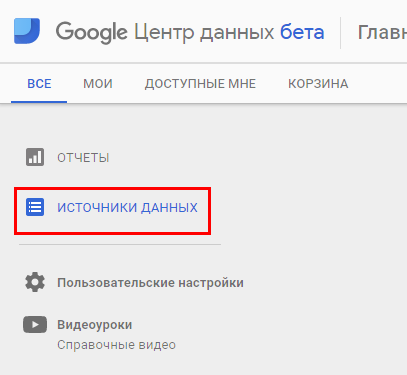
- В нижнем правом углу экрана нажмите кнопку «+».
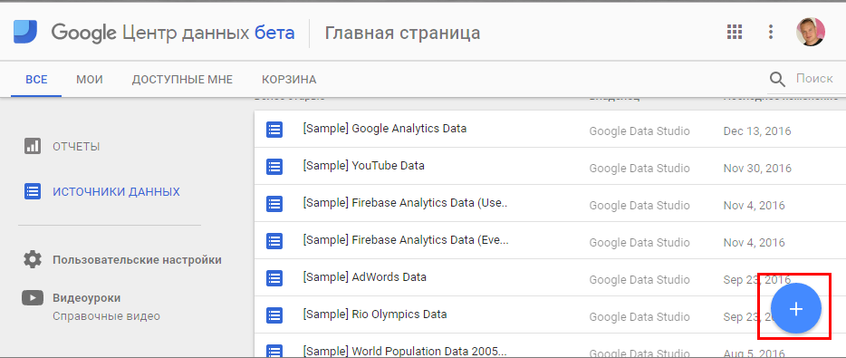
- В верхнем левом углу задайте имя для нашего источника данных.
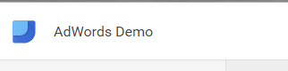
- Выбирайте нужный коннектор. Например, я буду загружать данные из AdWords.
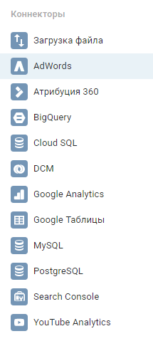
- Если загружаете данные из каких-либо сервисов, необходимо дать разрешение на доступ к данным. Если обращаетесь к базе данных, введите учётные данные.
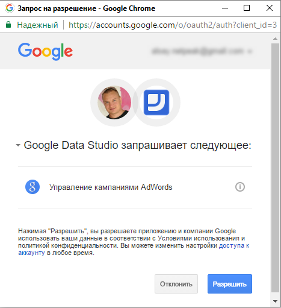
- Выбирайте нужный аккаунт.
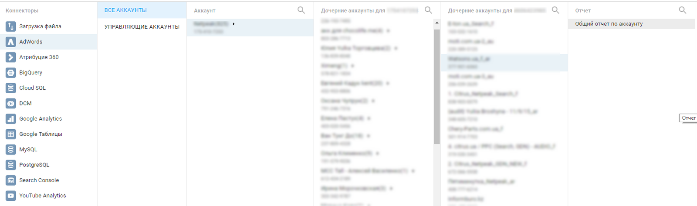
- В правом верхнем углу нажимайте кнопку «Связать».
Вычисляемые поля в Google Data Studio
После подключения к нужному источнику данных открывается окно редактирования данных, в котором можно:
- изменить тип данных любого поля;
- изменить тип агрегации некоторых полей;
- создавать вычисляемые поля.
С типом данных и агрегацией сложности не возникнет. Пожалуй, единственной интересной возможностью в данном случае является создание вычисляемых полей, например, строить вычисление на основе CTR на основе загруженных данных по количетсву кликов и показов.
Считаем объем потерянных конверсий в Google Data Studio
Ранее я описывал несколько способов вычисления объёма потерянных конверсий в AdWords. Попробуем вычислить их в Google Data Studio.
Полный список поддерживаемых Google Data Studio функций.
Для создания нового вычисляемого поля необходимо нажать кнопку «+».
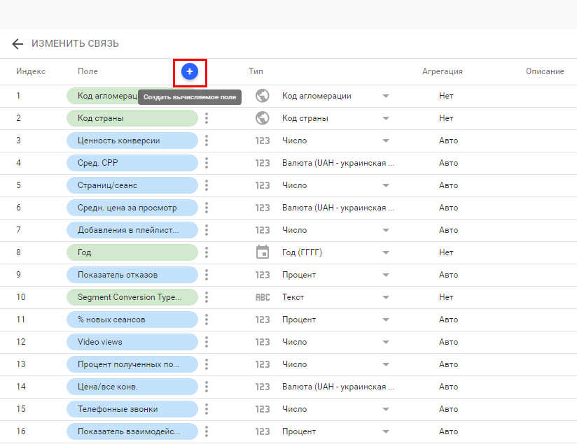
Далее добавляем девять расчётных полей:
- Потерянные показы по рейтингу: ((Число показов / (1 – Процент потерянных показов в поиск. сети (рейтинг))) – Число показов) + ((Число показов / (1 – Процент потерянных показов в КМС (рейтинг))) – Число показов)
- Потерянные показы по бюджету: ((Число показов / (1 – Процент потерянных показов в поиск. сети (бюджет))) – Число показов) + ((Число показов / (1 – Процент потерянных показов в КМС (бюджет))) – Число показов)
- Потерянные клики по рейтингу: Потерянные показы по рейтингу * (Клики / Число показов)
- Потерянные клики по бюджету: Потерянные показы по бюджету * (Клики / Число показов)
- Потерянные конверсии по бюджету: Потерянные клики по бюджету * (Конверсии/Клики)
- Потерянные конверсии по рейтингу: Потерянные клики по рейтингу * (Конверсии / Клики)
- Доля потерянных конверсий по рейтингу: Конверсии / (Конверсии + Потерянные конверсии по рейтингу + Потерянные конверсии по бюджету)
- Доля потерянных конверсий по бюджету: Потерянные конверсии по бюджету / (Конверсии + Потерянные конверсии по рейтингу + Потерянные конверсии по бюджету)
- Доля полученных конверсий: Конверсии / (Конверсии + Потерянные конверсии по рейтингу + Потерянные конверсии по бюджету)
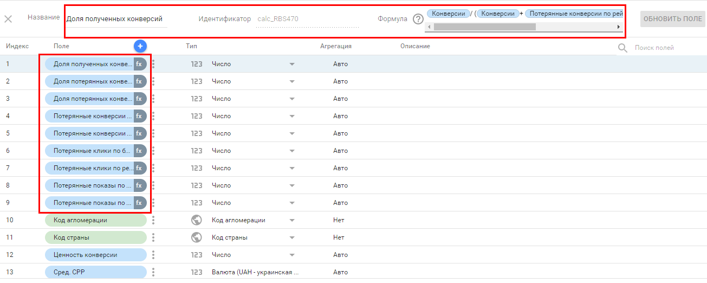
Жмём «Создать отчёт» и в окне «Добавление источника данных» нажимаем «Добавить к отчёту».
Визуализация данных в Google Data Studio
На момент написания статьи Google Data Studio поддерживает 15 визуальных элементов:
- динамические ряды;
- гистограмма;
- круговая диаграмма;
- таблица;
- географическая карта;
- сводка;
- точечная диаграмма;
- линейчатая диаграмма;
- диаграмма с областями;
- текст;
- изображение;
- прямоугольник;
- круг;
- диапазон дат;
- фильтры.
Условно все визуальные элементы разбиты на три группы:
- элементы для визуализации данных;
- элементы оформления;
- элементы для фильтрации данных.
- Чтобы добавить визуальный элемент в отчёт, достаточно указать, какой элемент вы хотите добавить, и выделить на отчёте область в которую хотите добавить этот элемент.
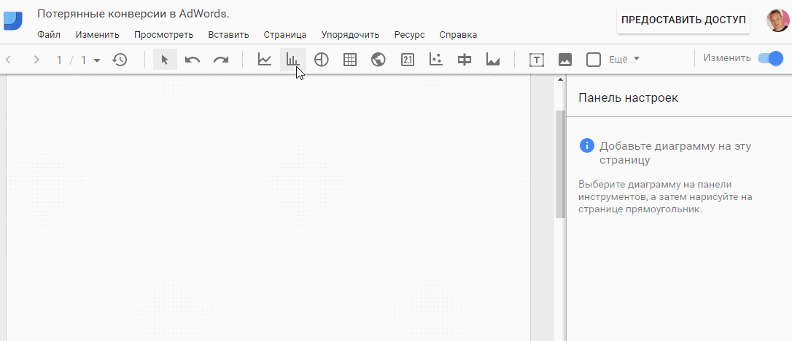
- Чтобы построить отчет в разрезе рекламных кампаний по доле потерянных конверсий, в области настроек гистограммы в правой части экрана вместо добавленного по умолчанию показателя «Клики», ставим показатель «Доля полученных конверсий».
Затем добавляем ещё два показателя: «Доля потерянных конверсий по бюджету» и «Доля потерянных конверсий по рейтингу».
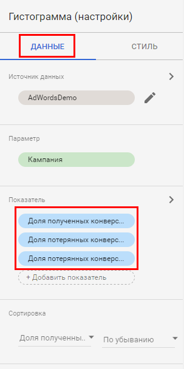
- Переходим на вкладку «Стиль» в настройках гистограммы и убираем галочку «Один цвет», ставим галочку «Многоуровневые столбцы» и выставляем цвет данных.
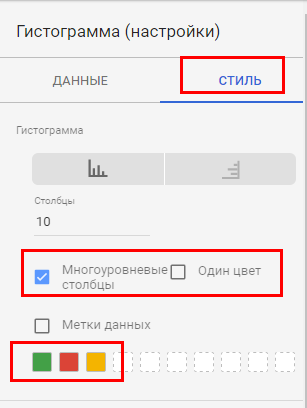
- В результате у нас получится такой отчёт:
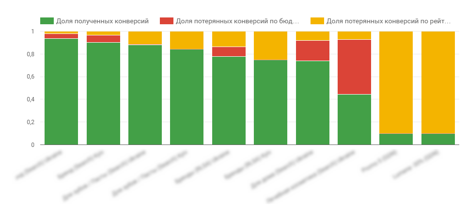
Мы уже рассказывали об этом отчете в других статьях, когда получали его с помощью языка R и Supermetrics.
Как выбирать период визуализации данных в таблицах и диаграммах
Для удобства анализа нам остаётся добавить фильтр по датам. Для этого мышкой выделите элемент «Диапазон дат» и укажите место в отчёте, куда хотите добавить данный фильтр:
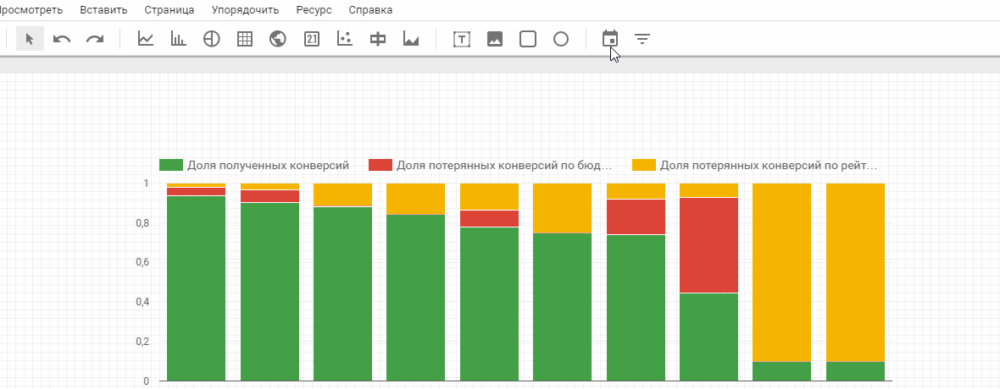
По умолчанию с помощью этого фильтра вы будете изменять диапазон дат для всех визуальных элементов, добавленных на текущую страницу.
Если хотите разделить элементы на группы и управлять диапазоном дат отдельно для разных групп, можете выделить нужные элементы кликом. Далее на любом из выделенных визуальных элементов кликнуть правой кнопкой мыши и в появившемся меню выбрать команду «группировать».
Также это меню позволяет копировать, удалять, менять положение визуального элемента и выравнивать элементы по горизонтали и вертикали.
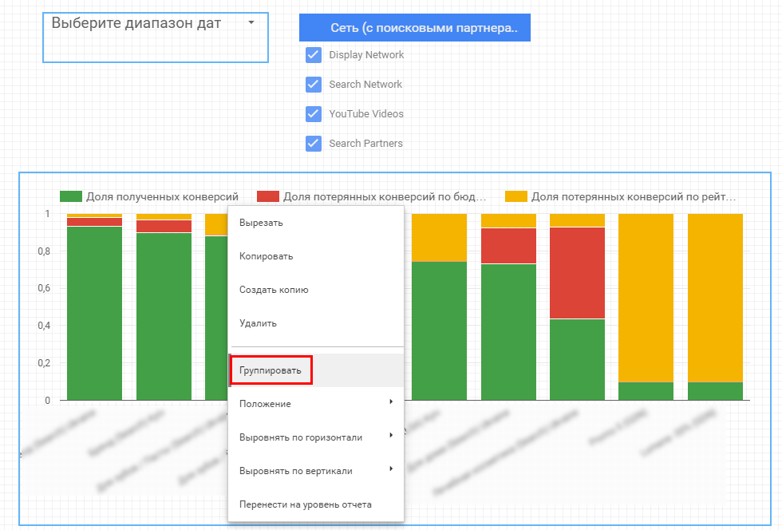
Как добавить фильтры
Последний штрих визуализации — добавление фильтра по параметру «Сеть распространения объявлений». На самом деле вы можете добавлять фильтр к совершенно любому полю.
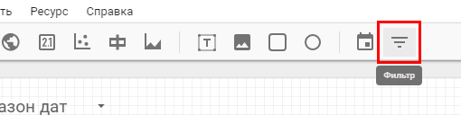
Убираем галочку «Показать значение» в области настройки фильтра и меняем параметр по умолчанию «Кампания» на нужный. В нашем случае это «Сеть (с поисковыми партнёрами)», но вы можете выбрать любой параметр («Тип кампании», «Устройство», «Город» и так далее).
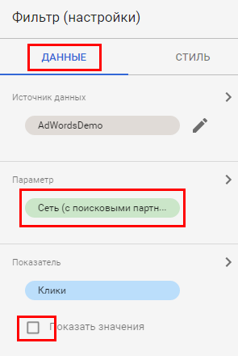
Так же, как и в случае с элементом «Диапазон дат», вы можете подключать созданный фильтр к отдельным визуальным элементам с помощью группировки.
По умолчанию действие фильтра распространяется на все добавленные на страницу визуальные элементы.
Теперь ваша визуализация будет выглядеть так:
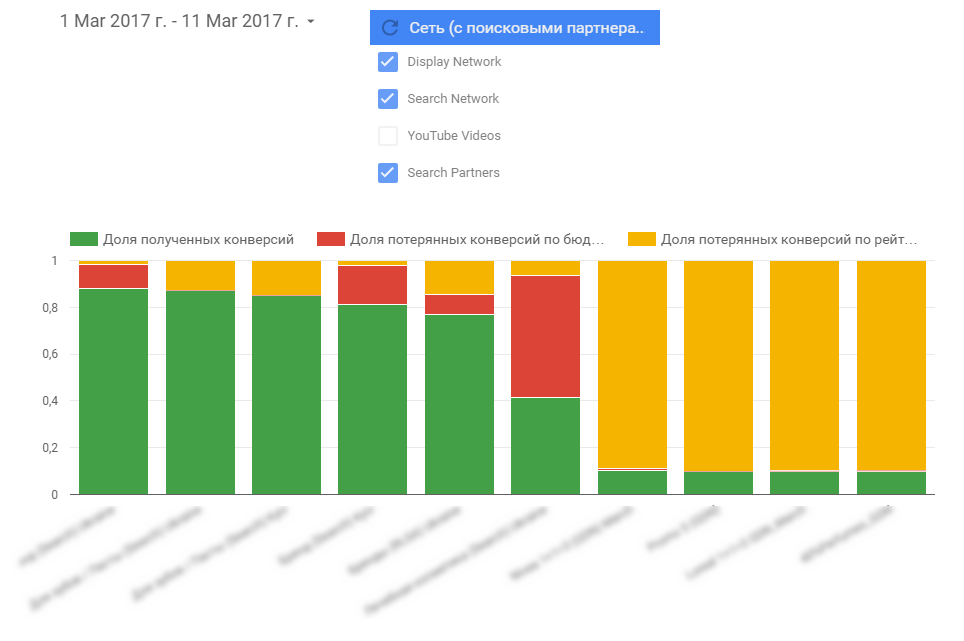
Как открыть доступ к отчёту
Чтобы поделиться готовой визуализацией, в меню «Файл» выберите команду «Открыть доступ».
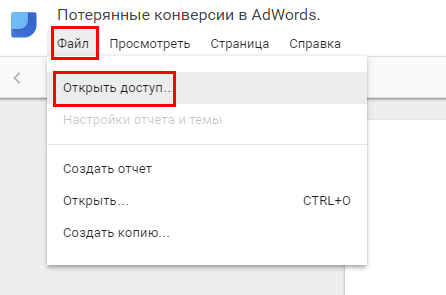
Далее откроется привычное для большинства пользователей Google Drive диалоговое окно «Совместный доступ», в котором можно либо предоставить доступ к отчёту по ссылке, либо указать электронные адреса (на Gmail) пользователей, которым хотите открыть доступ к отчёту.
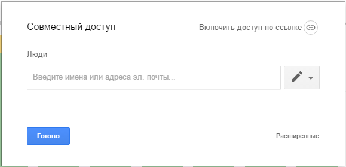
Как использовать готовый отчёт в качестве шаблона
После создания визуализации может потребоваться построить те же отчёты на основе другого источника данных, к примеру, другого аккаунта Google AdWords, или другого представления Google Analytics.
Для этого:
-
Создайте новый источник данных.
-
Добавьте в него все используемые в визуализации расчётные поля (в нашем случае мы создавали поля в пункте «Вычисляемые поля в Google Data Studio»).
-
Откройте готовый отчёт и в меню «Файл» выберите пункт «Создать копию».
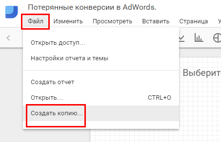
- В окне «Создание нового отчёта» в поле «Новый источник данных» из выпадающего списка выберите источник данных, на основе которого вы хотите получить визуализацию, и нажмите «Создать отчёт».
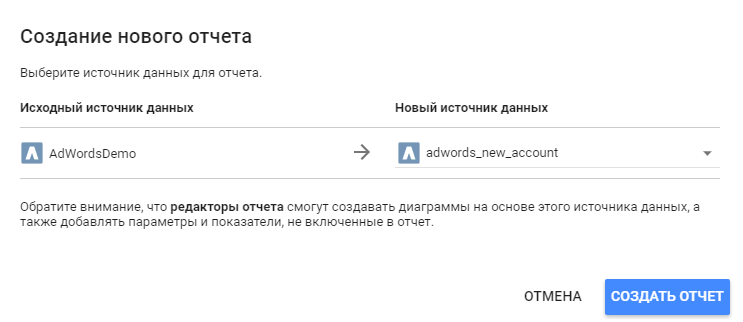
Выводы
У Google Data Studio свои достоинства и недостатки.
Достоинства:
- Интуитивно понятный, простой интерфейс. Легко работать без предварительного изучения справочных материалов.
- Не требует знаний SQL и различных языков программирования.
- Можно делиться отчетами онлайн.
- Можно разделять права доступа на чтение и редактирование для различных пользователей.
- Data studio — бесплатный инструмент.
Недостатки:
- Нет возможности настроить связи между источниками данных.
- Data studio содержит довольно маленький набор коннекторов к источникам данных, большая часть из которых — продукты Google, также отсутствует ODBC коннектор.
- Для работы с вычисляемыми полями на данный момент доступно 50 функций, что значительно меньше набора функций в Power BI, Tableau, QlikView, Excel и Google Spreadsheets.
- Невозможно обращаться к базе данных с помощью запросов. В таком случае представление запроса необходимо заранее создавать в базе данных и для получения результата обращаться именно к представлению.
- По сравнению с большинством других инструментов визуализации данных, в Data Studio довольно маленький набор визуальных инструментов.
Google Data Studio хорош, если нужно создать эффектные дашборды за считанные минуты. Инструмент простой и интуитивно понятный, но я бы не рассматривал данную платформу для построения каких-то серьезных аналитических решений.